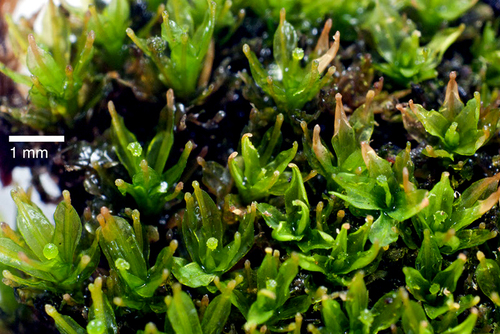

Calymperaceae
(Calymperes Moss Family - informal)
Calymperaceae is a large, primarily tropical and subtropical family of mosses, often found growing as epiphytes or on rock and soil. They are readily identified by distinctive leaf features, including a basal area of large, clear cells (cancellinae), often a hyaline border, and frequently, specialized asexual propagules (gemmae) clustered at the leaf tips.
Overview
The Calymperaceae family is a significant component of bryophyte diversity in warm, humid regions around the world. With major genera like Calymperes and Syrrhopodon, this family includes hundreds of species adapted primarily to epiphytic (growing on trees) or epilithic (growing on rocks) lifestyles, though some occur on soil. They often form tufts, cushions, or mats, contributing to the rich bryophyte flora of tropical rainforests and other moist habitats.
A key adaptation and identifying feature is the specialized leaf structure. Most notable are the cancellinae, distinct zones of large, clear, empty cells at the leaf base, believed to function in rapid water absorption and storage – crucial for epiphytes experiencing intermittent wet/dry cycles. Many species also possess a border of clear, elongated cells (hyaline border) along the leaf margin. Furthermore, asexual reproduction via gemmae or propagules produced at the leaf tips is extremely common and often more frequent than sexual reproduction via spores, facilitating local dispersal and colonization.
Calymperaceae is placed within the order Pottiales, a large and diverse order of mosses. Its unique combination of leaf features and reproductive strategies makes it a well-defined and recognizable family within this order.
Quick Facts
- Scientific Name: Calymperaceae
- Common Name: (Calymperes Moss Family - informal)
- Number of Genera: ~4-5 (e.g., Calymperes, Syrrhopodon, Mitthyridium)
- Number of Species: Approximately 400-500
- Distribution: Pantropical and subtropical; some species extend into warm temperate zones.
- Evolutionary Group: Bryophytes - Bryopsida (True Mosses) - Pottiales
Key Characteristics
Calymperaceae mosses are defined by unique leaf structures and reproductive strategies.
Gametophyte Form and Habit
The gametophyte generation forms perennial tufts or mats:
- Habit: Plants typically form dense or loose tufts, cushions, or mats.
- Size: Variable, from small to moderately robust.
- Color: Often whitish-green, yellowish-green, glaucous green, or dark green.
- Stems: Erect or sometimes creeping and secondarily erect, branching variable. Central strand usually present. Often with rhizoids at the base or along stems.
- Substrate: Primarily epiphytic (bark, twigs), epilithic (rock), or occasionally terrestrial (soil).
Leaves (Phyllids)
Leaves possess several highly distinctive features:
- Arrangement & Shape: Usually crowded, erect-spreading to spreading when moist, often contorted, incurved, or appressed when dry. Shape is variable – commonly lingulate (tongue-shaped), spatulate (spoon-shaped), lanceolate, or linear-lanceolate.
- Costa (Midrib): Strong, single, typically ending near the apex (percurrent) or extending beyond it (excurrent), sometimes bearing gemmae.
- Cancellinae: A prominent and diagnostic group of large, empty, clear (hyaline), thin-walled cells occupying the basal angles (shoulders) of the leaf, sharply distinct from the upper green cells.
- Hyaline Border: Often present, consisting of one to several rows of narrow, elongated, thick-walled, clear cells along the upper leaf margins, sometimes extending around the apex.
- Upper Laminal Cells: Small, dense, typically quadrate or hexagonal, often obscured by papillae (single or multiple bumps per cell) or mammillae (single large bulge per cell).
- Asexual Propagules: Extremely common in many species. Multicellular gemmae or propagules (small, detachable structures) are typically produced in clusters at the extreme leaf apex, or sometimes along the costa or lamina.
Reproductive Structures
- Sexual Condition: Variable, autoicous or dioicous.
- Archegonia & Antheridia: Usually terminal on main stems or branches. Perichaetial and perigonial leaves may be differentiated from vegetative leaves.
- Frequency: Sexual reproduction resulting in sporophytes is often infrequent compared to asexual reproduction via propagules in many species.
Sporophyte
Sporophytes, when produced, have characteristic features:
- Seta: Variable in length, from very short to moderately long (often 2-15 mm), typically straight and smooth.
- Capsule: Typically erect and symmetric, cylindrical or ovate-cylindrical, smooth-walled.
- Operculum: Usually conic-rostrate (with a long beak).
- Peristome: Single (haplolepidous type), consisting of 16 teeth. Teeth are often lanceolate, typically papillose, sometimes rudimentary or even absent (especially common in Calymperes).
- Calyptra: Large and conspicuous. In Calymperes, it is typically persistent, campanulate (bell-shaped), pleated (plicate), covers the entire capsule, and remains attached at the base after the operculum falls. In Syrrhopodon, it is typically cucullate (hood-shaped), smooth or roughened, and falls away entirely.
Spores
Spores are typically small to moderate in size, spherical, and often finely papillose.
Chemical Characteristics
No specific chemical characteristics are widely noted beyond those typical for Bryopsida mosses.
Field Identification
Identifying Calymperaceae often relies on recognizing the unique leaf features, especially with a hand lens, combined with habitat and geographic location.
Primary Identification Features (Hand Lens Level)
- Leaf-Tip Propagules: The presence of tiny, spindle-shaped or globose gemmae/propagules clustered at the very tip of the leaves is a very strong indicator for many species in this family.
- Cancellinae: Look for the distinct patches of large, clear cells at the basal corners (shoulders) of the leaves. This often gives the leaf base a translucent or whitish appearance distinct from the green upper part. A good hand lens is usually required.
- Hyaline Border: Check the upper leaf margins for a distinct border of clear, narrow cells (often whitish or yellowish).
- Habitat & Location: Predominantly found in tropical or subtropical regions, often growing on tree bark, logs, or sometimes rocks or soil.
- Whitish/Glaucous Hue: Many species have a somewhat pale or whitish-green appearance.
Secondary Identification Features
- Leaf Shape: Often lingulate (tongue-shaped) or spatulate (spoon-shaped).
- Dry Leaf Posture: Leaves often strongly contorted or incurved when dry.
- Calyptra Type (if sporophytes present): Note whether the calyptra is large, pleated, and persistent at the base (Calymperes) or hood-shaped and deciduous (Syrrhopodon).
- Capsule: Erect, cylindrical capsules on short to moderate setae.
Seasonal Identification Tips
- Year-Round: Gametophytes are perennial. The key vegetative features (cancellinae, border) and asexual propagules are usually present throughout the year in suitable climates.
- Variable: Sporophyte production can be seasonal but is often infrequent in species that rely heavily on asexual reproduction.
Common Confusion Points
Distinguishing Calymperaceae from other families:
- Leucobryaceae (Leucobryum, Octoblepharum): Also often whitish mosses in similar habitats. However, their leaf structure involves multiple layers of hyaline and chlorophyll cells (leucocysts/chlorocysts) throughout the leaf, lacking the distinct basal cancellinae and marginal hyaline border of Calymperaceae. They also lack leaf-tip propagules.
- Pottiaceae: A large, related family. Some genera may have hyaline borders or papillose cells, but they lack the distinct basal cancellinae. Leaf-tip propagules are rare in Pottiaceae. Sporophyte features often differ.
- Fissidentaceae: Easily distinguished by their unique two-ranked leaves with a sheathing vaginant lamina.
- Sematophyllaceae / Hypnaceae: Usually pleurocarpous (creeping, freely branching) mosses, lacking cancellinae and typically having different leaf cell shapes and sporophyte features.
Within the family:
- Calymperes vs. Syrrhopodon: Primarily distinguished by calyptra type (persistent campanulate vs. deciduous cucullate) and peristome (often absent/rudimentary vs. usually present). Microscopic leaf features also differ.
Field Guide Quick Reference
Look For:
- Habitat: Tropical/subtropical, often epiphytic
- Leaf-tip gemmae/propagules (very common)
- Cancellinae (clear cells at leaf base corners)
- Hyaline border on upper leaf margins
- Often whitish-green appearance
- Erect cylindrical capsules (if present)
Key Distinctions:
- vs. Leucobryaceae: Leaf structure (cancellinae vs. multi-layered leucocysts), propagules.
- vs. Pottiaceae: Cancellinae presence, leaf-tip propagules frequency.
- Calymperes vs. Syrrhopodon: Calyptra type, peristome presence.
Notable Examples
The family includes several important genera, notably Calymperes and Syrrhopodon.

Calymperes erosum
(Eroded Calymperes Moss - informal)
A widespread pantropical species, often found on tree bases, logs, or rocks. Characterized by lingulate leaves with distinct cancellinae, a hyaline border, and abundant spindle-shaped propagules produced at the leaf tip. Sporophytes are rare; peristome is typically absent. The calyptra is campanulate and persistent.

Syrrhopodon texanus
(Texas Syrrhopodon Moss)
Found in the southeastern USA, Mexico, Central and South America, often on tree bases or logs. Leaves are typically lanceolate with cancellinae and a hyaline border, often producing propagules at the tips. Unlike Calymperes, it usually produces sporophytes more frequently, possesses a distinct peristome, and has a cucullate (hood-shaped) calyptra that falls off.
Phylogeny and Classification
Calymperaceae is classified within the class Bryopsida and is firmly placed within the large and diverse order Pottiales. This placement is well-supported by both morphological characteristics (like the haplolepidous peristome type when present, leaf cell areolation) and molecular phylogenetic studies.
Within the Pottiales, Calymperaceae forms a distinct, monophyletic group characterized by its unique leaf adaptations (cancellinae, hyaline border, leaf-tip propagules). It is considered one of the core families within the order, representing a major evolutionary radiation, particularly in tropical epiphytic niches. Its closest relatives are generally considered to be within the Pottiaceae, the largest family in the order, though the exact sister relationships are still areas of active research.
Position in Plant Phylogeny
- Kingdom: Plantae
- Clade: Embryophyta (Land Plants)
- Division: Bryophyta (Mosses)
- Class: Bryopsida
- Order: Pottiales
- Family: Calymperaceae
Evolutionary Significance
Calymperaceae is evolutionarily significant for several reasons:
- Tropical Radiation: Represents a major diversification of mosses in tropical and subtropical ecosystems, particularly in epiphytic habitats.
- Leaf Specializations: The evolution of cancellinae and hyaline borders represents key adaptations likely related to water management in fluctuating environments.
- Asexual Reproduction Emphasis: The prevalence of specialized leaf-tip propagules highlights the evolutionary importance of asexual reproduction for dispersal and colonization in certain environments.
- Peristome Variation: Shows instances of peristome reduction and loss (especially in Calymperes), contributing to understanding patterns of sporophyte evolution within Pottiales.